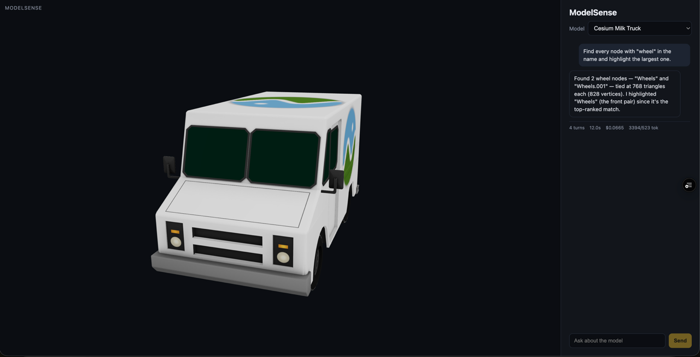
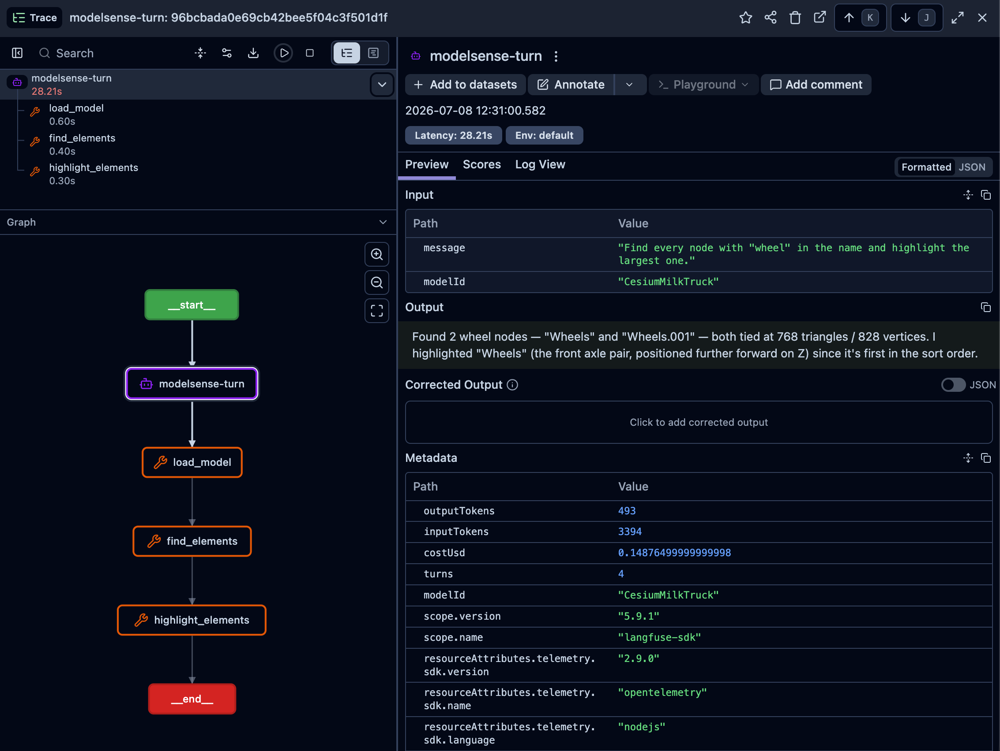

ModelSense
MCP SERVER · AGENT SDK · EVAL HARNESS
ModelSense lets you talk to a 3D model. You load a glTF/GLB scene in the browser, ask a question in plain language ("what's the highest-poly part, and how big is it?"), and a Claude agent answers by calling tools on an MCP server that actually parses the geometry. The viewer then highlights the part, frames the camera, and draws the measurement in front of you. The point of the project isn't the chat. It's the machinery that makes an agent's tool use checkable: a stateless MCP server with a typed tool surface, human approval on the one tool that writes, per-turn Langfuse traces, and a Python eval harness that scores the agent against a golden set the server computes itself.
The server exposes nine tools over Streamable HTTP: eight read-only (list and load models, scene stats, find and highlight elements, focus the camera, measure, suggest optimizations) and one gated report export that only runs after an explicit approval. Every tool returns text plus typed structuredContent, so the React Three Fiber viewer applies scene commands directly instead of guessing. Loaded models live in a session-keyed in-memory cache, which keeps the server stateless per request and pushes the identity of a scene into a session_id that every later tool carries.
Tools & skills
What I learned
- The eval harness is the project, not the agent. A Python harness drives the real
/chatendpoint through fifty golden tasks (lookup, multi-step, measurement, optimization, guardrail) and scores tool selection, argument validity, outcome, budget, and a guardrail safety invariant, with a Haiku judge for context fidelity. The golden answers are computed from the GLBs by the same server logic, not hand-typed, so the test can't quietly drift away from the geometry. - It caught a real bug. The baseline scored 94%, with the measurement category at 62% because the agent answered size questions from memory instead of calling
measure. One system-prompt change that forces the tool took measurement to 100% and the suite to 100%. The number moved because the harness made the failure legible, which is the whole argument for building it. - Human-in-the-loop belongs at the agent layer, not inside the tool. The eight read tools are allowlisted and auto-approved;
export_reportis gated throughcanUseTool, which emits an approval event and blocks until the client posts back to/chat/approve. The invariant the harness enforces is that a gated tool can never succeed without that approval. - The free tier checks the design. The first deploy on Render's 512 MB instance ran five tasks and then 502'd from an out-of-memory on the combined agent process, which is exactly the kind of constraint that decides whether "stateless per request" was a real choice or a slogan.

↳ side channel · Langfuse trace per turn · 50-task eval gates CI
| category | tasks | baseline | now |
|---|---|---|---|
| lookup | 12 | 100% | 100% |
| multi-step | 14 | 100% | 100% |
| measurement | 8 | 62% | 100% |
| optimization | 10 | 100% | 100% |
| guardrail | 6 | 100% | 100% |
| all tasks | 50 | 94% | 100% |
agent · claude-sonnet-5 · context-fidelity judge · claude-haiku-4-5
